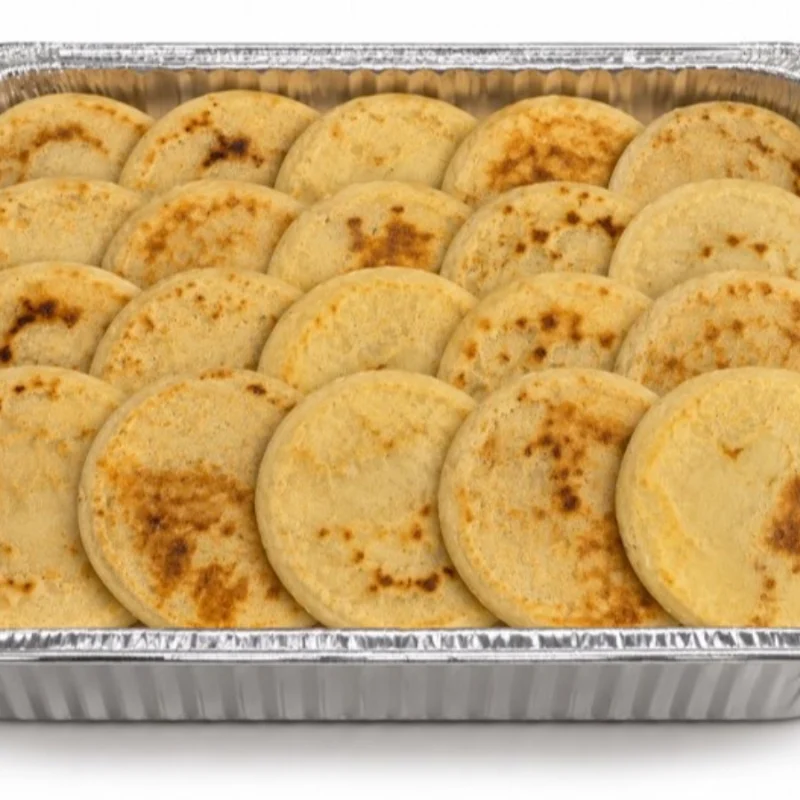
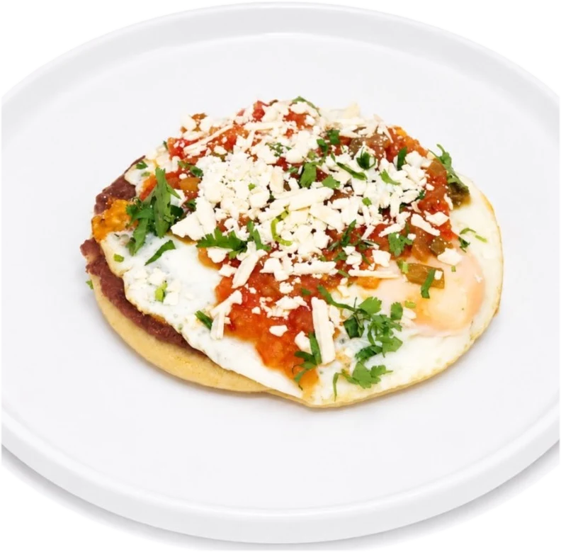
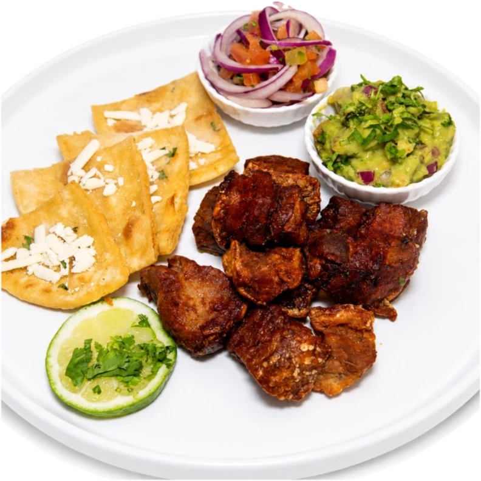
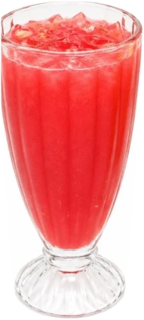
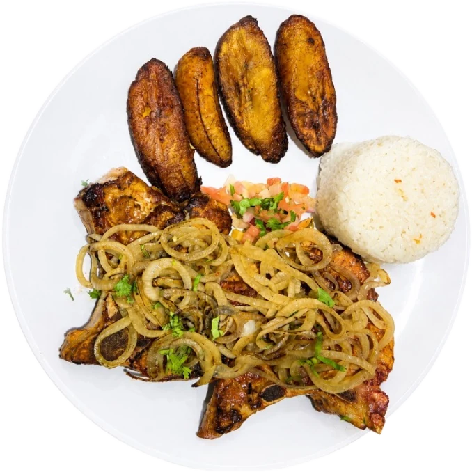
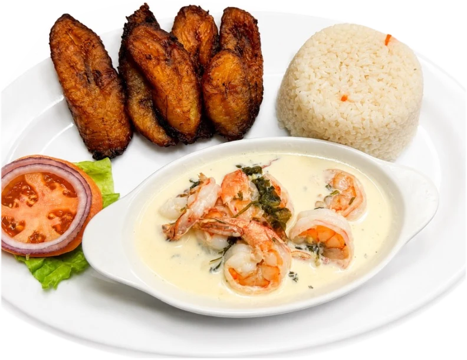
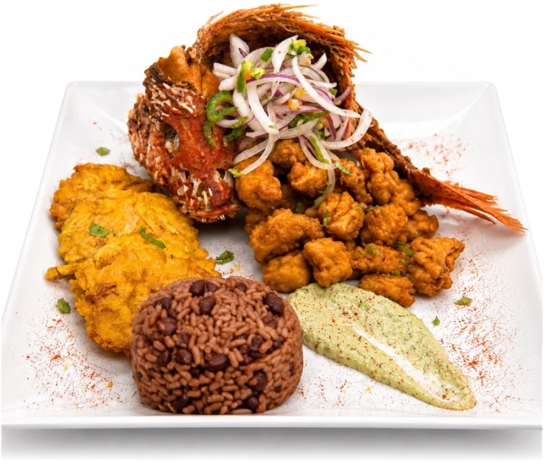
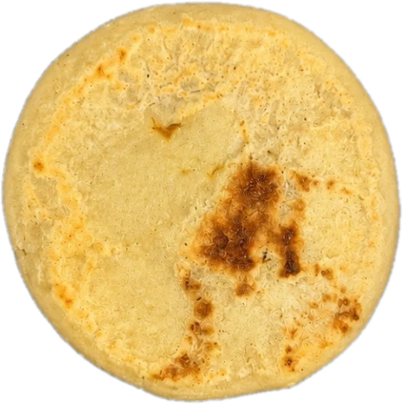

EL SALVADOREÑO
Party trays

Sabor único
e inigualable
4.6 on Uber Eats
1,500+ ratings
Restaurant & Grill · Kendall, Miami
Pupusas, Salvadoran breakfast and the grill. Open 8am every day.
25 pupusas $99.99 · 50 pupusas $172.99 · ready in about 30 minutes
Twelve pupusas,
made on the comal.
Every pupusa is patted by hand and griddled to order. Served with curtido and salsa.
- Frijol$5.00
- Queso$5.25
- Revuelta$5.25
- Chicharrón$5.25
- Mixta$5.25
- Arroz$5.50
- Loroco y queso$5.75
- Pollo y queso$5.75
- Zucchini$5.75
- Espinaca$5.75
- Jalapeño y queso$5.75
- Carnavalera$6.50







Open today 8am to 9pm
Come hungry.
“Everything was beyond delicious. The outside doesn’t look like much but inside is nice and roomy.”Yelp review
- Where
- 10855 SW 72nd St, Suite 28, Miami, FL 33173 · Directions
- Hours
- Sun to Thu 8am to 9pm · Fri and Sat 8am to 10pm
- Nights
- Karaoke Friday and Saturday, 7 to 10pm
- Call
- (305) 271-3101